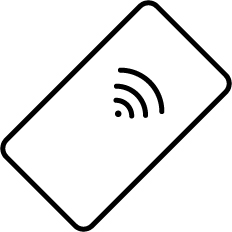
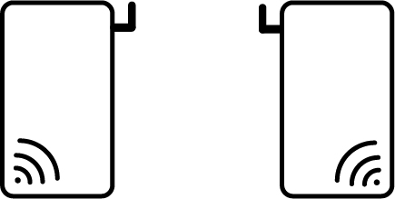
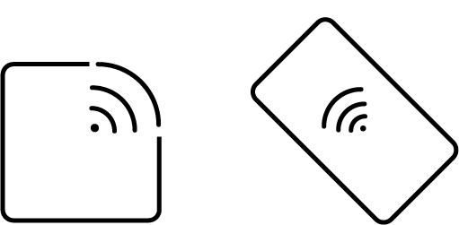

NFC
UWB
RFID
MWN
NFC (Near-Feild Communication)
Near-field communication (NFC) is a low-speed connection between two electronic devices. Commonly used in contactless payment systems and electronic identity documents and keycards. This type of network access point offers, when one of the devices is connected to the network, as exchange of data with online services such is banking with PayWave.

UWB (Ultra-Wideband)
Ultra-wideband (UWB) is a very low energy radio, short range, high bandwidth communication. This is commonly used in new smart phones, target sensor data collection, precision locating and tracking applications. This communication protocol can connect, recieve and catalogue accurate positioning data, precision sensing and place you in spacial context in a network.

RFID (Radio-Frequency Identification)
RFID (Radio-Frequency Identification) utilises electromagnetic fields to identify and track tags attached to objects such as scanners, building entry points and cellphones. An RFID tag has a radio transponder, radio receiver and transmitter. The data utilised with RFID can collect and accurately log real-time positioning of objects and humans and vehicles.

MWN (Municipal wireless network)
MWN (Municipal wireless network) is a city wide wireless network. Here in wellington there are many access points across the city that interconnect seamlessly as you travel the city. These wireless access points, even though they may seam invisible, are deployed in outdoor areas and are often hidden in city infrastructure such as Traffic poles and street lights. This network can connect you within a free city-wide network, keeping you constately connected to the internet